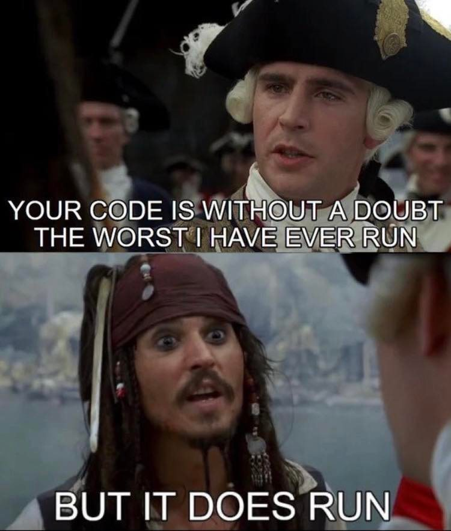
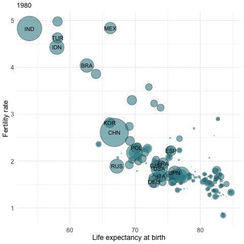
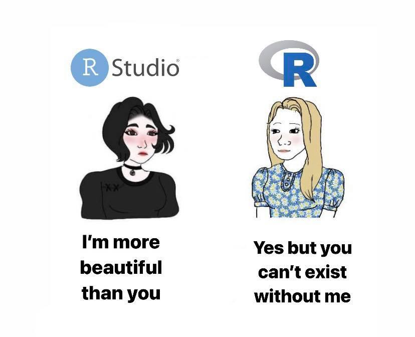
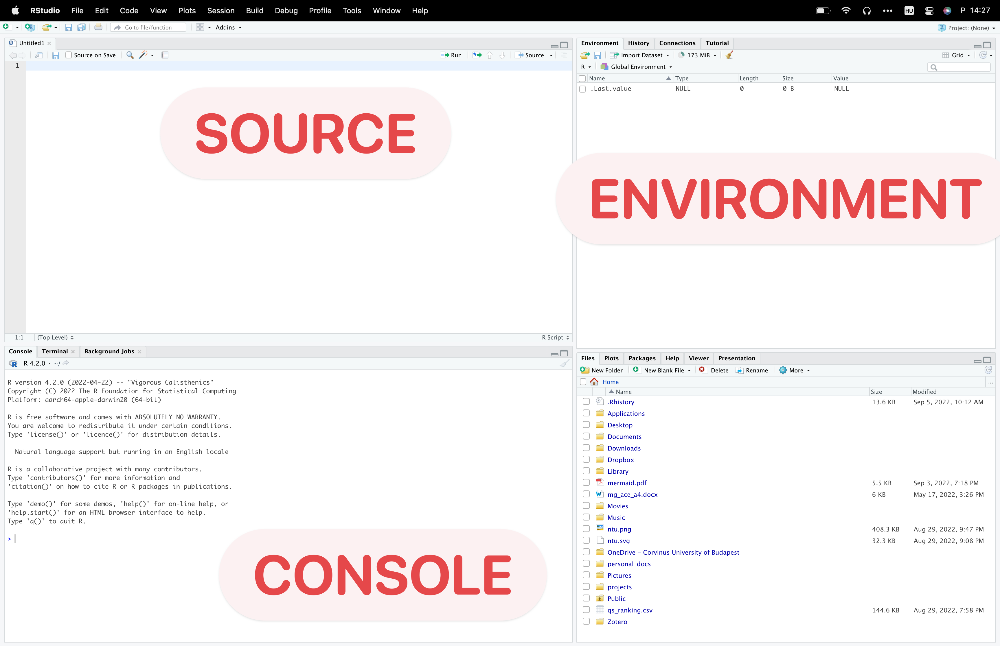
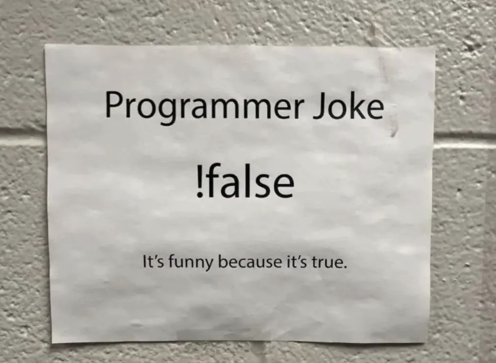

| TIOBE index of the most common popular languages in 2023 | ||
| Programming Language | Ratings | Compared to 2022 |
|---|---|---|
| Python | 14.16% | -1.58% |
| C | 11.27% | -2.70% |
| C++ | 10.65% | +0.90% |
| Java | 9.49% | -2.23% |
| C# | 7.31% | +2.42% |
| JavaScript | 3.30% | +0.48% |
| Visual Basic | 2.22% | -2.18% |
| PHP | 1.55% | -0.13% |
| Assembly language | 1.53% | -0.96% |
| SQL | 1.44% | -0.57% |
| Fortran | 1.28% | +0.26% |
| Go | 1.19% | +0.03% |
| MATLAB | 1.19% | +0.13% |
| Scratch | 1.08% | +0.51% |
| Delphi/Object Pascal | 1.02% | -0.07% |
| Swift | 1.00% | +0.02% |
| Rust | 0.97% | +0.47% |
| R | 0.97% | +0.02% |
| Ruby | 0.95% | +0.30% |
| Kotlin | 0.90% | +0.59% |
The base R
Readings and class materials for Tuesday, September 12, 2023
Why do we need a programming language?
- 📈 Handling large datasets: Economic data often consists of thousands or even millions of observations. Programming enables us to organize and process this data effectively. By writing code, we can automate repetitive tasks, explore the data, and perform calculations on a scale that would be impractical or time-consuming with manual methods.
- 🧹 Data cleaning and preprocessing: Real-world data is often messy and inconsistent. Programming allows us to clean and preprocess the data, removing any errors, inconsistencies, or missing values. By writing code to handle such data cleaning tasks, we can ensure the accuracy and integrity of our analysis.
- 🔁 Reproducibility: Programming promotes reproducibility in statistical analysis. By documenting and sharing our code, others can replicate our analyses, verify our findings, and build upon our work. This promotes transparency and strengthens the validity of our results.
- 🛃 Flexibility and customization: Programming languages like and Python provide a wide range of statistical libraries and packages specifically designed for data analysis. These libraries offer various functions and algorithms to perform statistical tests, regression models, or other techniques. The ability to customize and tailor these tools to specific research questions allows for more precise and detailed analysis.

Programming, like any other skill, requires practice and persistence ⚒️. As Hadley Wickham, a prominent figure in the community, once said, “The only way to write good code is to write tons of subpar code first. Feeling shame about bad code stops you from getting to good code.” 🚀 This sentiment underscores the importance of perseverance and learning from mistakes in the journey of mastering .
Why Choose ?
stands out as a free software, widely adopted across various domains such as statistics, data science, economics, and more. Beyond being a tool for data-related tasks, offers a rich ecosystem. With over 19,000 packages available on CRAN, extends its basic functionality to cater to diverse needs. Its graphical capabilities are unparalleled, and with the Shiny package, one can effortlessly craft minimalist web applications or dashboards. Our journey will encompass data manipulation, analysis, and visualization techniques.
Yeah, it is not most popular language… But among researchers it is obviously in the top ones. Python, Matlab, and Julia are the most commonly used languages for data science tasks. All the languages have their pro and cons, and we will come back to this issue once we have some insight about programming.
Python is often seen as the second best language for everything due to its large community and available resources. Julia is much less popular, but once you have mastered and Python, it is easy to use and it is extremely fast.
R is great because of the ready-to-use extensions that make the work of a researcher much easier. If you are working with many different data sources for academic research or reporting, then is your best choice! You will see that R’s learning curve is pretty flat at the beginning, but it is going to became pretty steep after a few weeks.
Oh and, it is free 👼🏻. This confers a significant advantage in comparison to other analytical tools. Opting for STATA or SPSS may pose difficulties in terms of personal computer usage due to their costs. Additionally, Python is often inaccessible in research centers, such as the Hungarian Statistical Office or the Central Bank of Hungary, due to privacy concerns. Consequently, it seems that represents a highly favorable alternative.

A Glimpse of R’s Capabilities
R’s versatility can be showcased through various real-world applications:
COVID Tracker: An application developed using (utilizing Shiny and Leaflet) provides real-time tracking of COVID cases. View the tracker here.
Real-time Epidemiology of the Hungarian Coronavirus Epidemic: This application, crafted by Tamás Ferenci, offers insights into the progression of the coronavirus epidemic in Hungary. Explore the application here.
-
Data Visualization: R’s prowess in data visualization can be demonstrated through intricate plots and graphs, which can be generated in a matter of minutes.


Setting Up and RStudio

To embark on your journey, you’ll need to install both R and RStudio. RStudio serves as a dedicated Integrated Development Environment (IDE) for R. While it’s possible to run code without RStudio, using tools like Notepad, RStudio offers a more integrated experience tailored for (and recently Python). It provides features like code snippets, code completions, and rendering capabilities that enhance the coding experience.
A Tour of RStudio
RStudio’s interface is divided into various panes:

-
Source: This is where we write and save our scripts. Scripts are saved with a
.Rextension by default, but other formats are also supported. To execute a line of code, usectrl + enter, and for the entire script, usectrl+shift+enter.
-
Console: This pane displays executed codes and their outputs. For instance, typing
2 + 2and pressingenterwill display the result4.
Tip
We do not write our codes here. If you just wrote something here, then you can find it at the history pane, but it is going to be painful.
-
Environment: Here, you can view all the variables you’ve created. For instance, after assigning
x = 3, you can see the variablexin this pane.
Tip
Go to to preferences -> General -> Advanced and activate the “Show Last.value”. This will help a lot 😉.
-
Help: This pane is invaluable when you’re unfamiliar with a function. By typing
?function_name, you can access detailed documentation about the function.
- Files: This pane displays files in your current working directory. It’s crucial to set a project directory to streamline your workflow.
Tip
To increase efficiency, you can expedite the process by referencing a file’s name using quotation marks ("") and typing the initial characters of its name. RStudio will then provide you with a list of options that you can select by pressing the TAB key.
-
Packages: From this pane, you can install and activate packages. From this pane you can install only the packages that are available at CRAN. It requires tons of extra work to register a package there, so you may find a lot online (I spent a 1 week developing
currrand one extra week to fulfil every requirement to finally publish). And please, please, please:
Warning
Never leave an install.packages(...) line in your code! This is the worst habit you can have in programming, yet many people do it. If you think it’s useful so that others can run it, it’s not worth it either, since RStudio automatically detects packages that haven’t been installed yet and recommends installing them. If you need an automatic package installation in your workflow, then just use pacman (but this does not belong to a beginner course).
Tip
I suggest you watch the following video for plenty of other useful tips. You can watch it later when you have a better understanding of our goals with R. You may use other IDEs like PyCharm or VSCode in the future, but I highly recommend that you become very familiar with your program as this will make you a productive programmer.
Data Types in
R supports a variety of data types:
Numeric: These are basic numerical values. For instance, assigning
x <- 4makesxa numeric type.Character: This data type can contain letters, digits, or whitespace. For example,
y <- "blue"assigns a character value toy.Logical: These are boolean values, either
TRUEorFALSE.Factors: Useful for categorical data, factors can help in sorting and classifying data. Imagine the various categories of sizes. It wouldn’t make much sense to arrange them in alphabetical order. By utilizing factors, you have the ability to determine the sequence of the different values.
Ever confused about what is the type of x? We can use the class command to answer this.
x <- "2"
class(x)[1] "character"Data Structures in
R offers several data structures to store and manipulate data:
- Vectors: These are one-dimensional arrays that can store numeric, character, or logical values.
Some examples
v <- c("a", "b", "c", "d") # combine
v[1] "a" "b" "c" "d"v[1] # 1st item[1] "a"v[2] # 2nd item[1] "b"v <- 1:10 # from 1 to 10
v [1] 1 2 3 4 5 6 7 8 9 10[1] "L" "L" "M" "other" "S" "XL" [1] S M L L XL
Levels: XS < S < M < L < XLNA stands for “Not Available” and is used to represent missing or undefined values in data. It is a special value that indicates the absence of a valid observation or result. NA is commonly used in data analysis and manipulation tasks to handle missing data and perform computations or operations without encountering errors.
- Data Frames: These are tables where each column is a variable and each row is an observation.
Example
avengers_df <- data.frame(
id = 1:4,
name = c("Captain America", "Hulk", "Groot","Strange"),
species = c("human", NA, "Flora colossus", "human")
)
avengers_df id name species
1 1 Captain America human
2 2 Hulk <NA>
3 3 Groot Flora colossus
4 4 Strange human- Lists: These are ordered collections of objects, which can be of different types and lengths.
To store more complex data, the list function can be used. If you want to use the data.frame function, it is important to have vectors of equal length. However, in cases where you need to store a collection of data.frames, such as a big panel dataset with separate files for each year (e.g., cis_survey2016.csv, cis_survey2017.csv), using a list is a perfect solution. This situation is not uncommon, and I recommend storing your data in a list.
mylist <- list(avengers_df, v)
mylist[[1]]
id name species
1 1 Captain America human
2 2 Hulk <NA>
3 3 Groot Flora colossus
4 4 Strange human
[[2]]
[1] "XL" "M" "L" "S" "L" "other"Now mylist stores a data.frame and two vectors. You can access the elements by [[ ]]. For example, the 2nd element:
mylist[[2]][1] "XL" "M" "L" "S" "L" "other"Basics of programming
In the following, I will introduce the most basic expressions that may arise during programming. If you already have experience in any language, these will surely not pose a difficulty for you, although syntax varies in every language. These are elements of coding that function in any language in this way, and they are essential foundations for transforming our thoughts into code.
Conditional Statements in
Logical operators such as <, >, ==, and != can be used to form conditions.
Let’s see some examples!
4 < 5[1] TRUE5 <= 5[1] TRUE4 > 5[1] FALSE(2 + 2) == 4[1] TRUE5 >=4[1] TRUE2 == 3 # equal?[1] FALSE3 != 3 # not equal?[1] FALSE
Combining conditions
2 == 2 & 2 == 3 # and[1] FALSE2 == 2 | 2 == 3 # or[1] TRUEIt is preferred to use && and || in this case, as this forces R to only check the next condition if it can alter the final outcome. For example, if the first condition is FALSE and && is used, the subsequent condition will not be evaluated.
Conditional evaluation
R supports conditional statements like if, else if, and else to execute code based on specific conditions.
students_at_class = 25
if (students_at_class > 20) {
print("You R great!")
} else if (students_at_class > 10) {
print("Would you like some additional assignment?")
} else {
print("You will all fail!")
}[1] "You R great!"
Tip
If you want to write an if … else statement in R, I highly recomment you to use the snippet for that. Snippet means, that when you type if and press shift + tab, then R will automaticly write the framework you have to use.
Working with vectors
x <- 1:10
x %% 3 == 0 [1] FALSE FALSE TRUE FALSE FALSE TRUE FALSE FALSE TRUE FALSE[1] 3 6 9 [1] "odd" "even" "odd" "even" "odd" "even" "odd" "even" "odd" "even"Loops
Loops are used to execute a block of code multiple times. supports loops like for and while.
For
For loop is used to iterate over a vector.
# Basic for loop to print numbers from 1 to 5
for (i in 1:5) {
print(i)
}[1] 1
[1] 2
[1] 3
[1] 4
[1] 5Alternatively, we have a somewhat more sophisticated sequence, the Fibonacci series! Let us examine the first 10 elements of the Fibonacci sequence.
While
While loop is used to execute a given script while the condition is true.
# Initialize the first two Fibonacci numbers
fibonacci <- c(0, 1)
# Generate Fibonacci numbers while the last value is less than 50
while (tail(fibonacci, 1) < 50) {
next_fibonacci <- sum(tail(fibonacci, 2))
fibonacci <- c(fibonacci, next_fibonacci)
}
# Remove the last number which is greater than or equal to 50
fibonacci <- fibonacci[-length(fibonacci)]
# Print the Fibonacci sequence
print(fibonacci) [1] 0 1 1 2 3 5 8 13 21 34Functions

Functions are blocks of code that can be reused. provides numerous built-in functions, and users can also define their own. Functions enhance code readability and reduce redundancy.
Tip
Use the FUN 🤗 snippet to generate the framework for a new function.
fibonacci(13:15)[1] 144 233 377
Note
Writing good functions can be challenging, but once you’ve got the basics down, here are some tips that could help: https://style.tidyverse.org/functions.html
The apply family
The functions belonging to the Apply Family will not be used frequently, as there is a more modern and transparent alternative for them. We will encounter these in the following weeks, however, it is important to be familiar with them as they form the basis for many packages and solutions (for instance, in parallelisation), and we cannot avoid having colleagues who use them.
The essence of these functions is to perform iteration on the input data. The difference between iteration and recursion is that in the latter case, it the previous result is used in the evaluation of the next step (for example, we saw this in the Fibonacci sequence). This is why, for example, processor cores cannot perform the given task separately at different points of the input data.
Apply
The function apply calls a function on each row or column of a data.frame (or matrix). So its first argument is the data.frame, the third is the function which should use and the second is the MARGIN:
MARGIN = 2: apply the given function on each of the COLUMNSMARGIN = 1: apply the given function on each of the ROWS
Example - Fertility rates by country / by year
Replacement Fertility Rate: Assuming there are no migration flows and that mortality rates remain unchanged, a total fertility rate of 2.1 children per woman generates a broad stability of the population.
x <- c(1.3, 4, 2, NA)
above_replacement_prop(x)[1] 0.3333333Example - Fertility rates by country / by year
Data from OECD
fertility_df AUS AUT BEL CAN CZE DNK FIN FRA DEU GRC HUN ISL IRL ITA JPN
1960 3.45 2.69 2.54 3.90 2.11 2.54 2.71 2.74 2.37 2.23 2.02 4.26 3.76 2.41 2.00
1961 3.55 2.78 2.63 3.84 2.13 2.55 2.65 2.82 2.44 2.13 1.94 3.88 3.79 2.41 1.96
1962 3.43 2.80 2.59 3.76 2.14 2.54 2.66 2.80 2.44 2.16 1.79 3.98 3.92 2.46 1.98
1963 3.34 2.82 2.68 3.67 2.33 2.64 2.66 2.90 2.51 2.14 1.82 3.98 4.01 2.56 2.00
1964 3.15 2.79 2.71 3.50 2.36 2.60 2.58 2.91 2.53 2.24 1.80 3.86 4.06 2.70 2.05
1965 2.97 2.70 2.61 3.15 2.18 2.61 2.46 2.85 2.50 2.25 1.81 3.71 4.03 2.67 2.14
1966 2.89 2.66 2.52 2.81 2.01 2.62 2.40 2.80 2.51 2.32 1.88 3.58 3.95 2.63 1.58
1967 2.85 2.62 2.41 2.60 1.90 2.35 2.32 2.67 2.45 2.45 2.01 3.28 3.84 2.54 2.23
1968 2.89 2.58 2.31 2.45 1.83 2.12 2.15 2.59 2.36 2.42 2.06 3.07 3.78 2.49 2.13
1969 2.89 2.49 2.27 2.40 1.86 2.00 1.94 2.53 2.21 2.36 2.04 2.99 3.85 2.51 2.13
1970 2.86 2.29 2.25 2.33 1.91 1.95 1.83 2.48 2.03 2.40 1.97 2.81 3.87 2.42 2.13
1971 2.95 2.20 2.21 2.19 1.98 2.04 1.70 2.50 1.97 2.32 1.92 2.92 3.98 2.41 2.16
1972 2.74 2.08 2.09 2.02 2.07 2.03 1.59 2.42 1.74 2.32 1.93 3.09 3.88 2.36 2.14
1973 2.49 1.94 1.95 1.93 2.29 1.92 1.50 2.31 1.56 2.27 1.95 2.95 3.74 2.34 2.14
1974 2.32 1.91 1.83 1.82 2.43 1.90 1.62 2.11 1.53 2.38 2.30 2.66 3.62 2.33 2.05
1975 2.15 1.83 1.74 1.80 2.40 1.92 1.69 1.93 1.48 2.33 2.38 2.65 3.40 2.21 1.91
1976 2.06 1.69 1.73 1.76 2.36 1.75 1.72 1.83 1.51 2.35 2.26 2.52 3.31 2.11 1.85
1977 2.01 1.63 1.71 1.75 2.32 1.66 1.69 1.86 1.51 2.27 2.17 2.31 3.27 1.97 1.80
1978 1.95 1.60 1.69 1.70 2.32 1.67 1.65 1.82 1.50 2.28 2.08 2.35 3.24 1.87 1.79
1979 1.91 1.60 1.69 1.70 2.29 1.60 1.64 1.86 1.50 2.26 2.02 2.49 3.23 1.76 1.77
1980 1.89 1.65 1.68 1.68 2.10 1.55 1.63 1.95 1.56 2.23 1.92 2.48 3.23 1.68 1.75
1981 1.94 1.67 1.66 1.65 2.02 1.44 1.65 1.95 1.53 2.10 1.88 2.33 3.07 1.60 1.74
1982 1.93 1.66 1.61 1.64 2.01 1.43 1.72 1.91 1.51 2.03 1.78 2.26 2.96 1.60 1.77
1983 1.92 1.56 1.57 1.63 1.96 1.38 1.74 1.78 1.43 1.94 1.73 2.24 2.76 1.54 1.80
1984 1.84 1.52 1.54 1.63 1.97 1.40 1.70 1.80 1.39 1.82 1.73 2.08 2.59 1.48 1.81
1985 1.92 1.47 1.51 1.61 1.96 1.45 1.64 1.81 1.37 1.68 1.83 1.93 2.50 1.45 1.76
1986 1.87 1.45 1.54 1.59 1.94 1.48 1.60 1.83 1.41 1.60 1.83 1.93 2.44 1.37 1.72
1987 1.85 1.43 1.54 1.58 1.91 1.50 1.59 1.80 1.43 1.50 1.81 2.07 2.31 1.35 1.69
1988 1.83 1.45 1.57 1.60 1.94 1.56 1.70 1.81 1.46 1.50 1.79 2.27 2.17 1.38 1.66
1989 1.84 1.45 1.58 1.66 1.87 1.62 1.71 1.79 1.42 1.40 1.78 2.20 2.08 1.35 1.57
1990 1.90 1.46 1.62 1.71 1.89 1.67 1.79 1.78 1.45 1.39 1.84 2.31 2.12 1.36 1.54
1991 1.85 1.51 1.66 1.72 1.86 1.68 1.80 1.77 1.33 1.37 1.86 2.19 2.09 1.33 1.53
1992 1.89 1.51 1.65 1.71 1.72 1.76 1.85 1.73 1.29 1.36 1.77 2.21 1.99 1.32 1.50
1993 1.86 1.50 1.61 1.69 1.67 1.75 1.81 1.66 1.28 1.32 1.69 2.22 1.91 1.26 1.46
1994 1.84 1.47 1.56 1.69 1.44 1.81 1.85 1.66 1.24 1.33 1.64 2.14 1.85 1.22 1.50
1995 1.82 1.42 1.56 1.67 1.28 1.81 1.81 1.71 1.25 1.28 1.57 2.08 1.85 1.19 1.42
1996 1.80 1.45 1.59 1.63 1.19 1.75 1.76 1.73 1.32 1.26 1.46 2.12 1.89 1.22 1.43
1997 1.78 1.39 1.60 1.57 1.17 1.76 1.75 1.73 1.37 1.27 1.38 2.04 1.94 1.23 1.39
1998 1.76 1.37 1.60 1.56 1.16 1.73 1.71 1.76 1.36 1.24 1.33 2.05 1.95 1.21 1.38
1999 1.76 1.34 1.62 1.55 1.13 1.74 1.73 1.79 1.36 1.23 1.29 1.99 1.91 1.23 1.34
2000 1.76 1.36 1.67 1.51 1.14 1.77 1.73 1.87 1.38 1.25 1.33 2.08 1.90 1.26 1.36
2001 1.73 1.33 1.67 1.54 1.15 1.75 1.73 1.88 1.35 1.25 1.31 1.95 1.96 1.25 1.33
2002 1.77 1.39 1.65 1.52 1.17 1.72 1.72 1.86 1.34 1.28 1.31 1.93 1.98 1.27 1.32
2003 1.77 1.38 1.67 1.55 1.18 1.76 1.76 1.87 1.34 1.29 1.28 1.99 1.98 1.29 1.29
2004 1.78 1.42 1.72 1.56 1.23 1.79 1.80 1.90 1.36 1.31 1.28 2.03 1.95 1.34 1.29
2005 1.85 1.41 1.76 1.58 1.28 1.80 1.80 1.92 1.34 1.34 1.32 2.05 1.88 1.33 1.26
2006 1.88 1.41 1.80 1.63 1.33 1.85 1.84 1.98 1.33 1.40 1.35 2.07 1.94 1.37 1.32
2007 1.99 1.39 1.82 1.67 1.44 1.84 1.83 1.95 1.37 1.41 1.32 2.09 2.01 1.39 1.34
2008 2.02 1.42 1.85 1.70 1.50 1.89 1.85 1.99 1.38 1.50 1.35 2.14 2.06 1.44 1.37
2009 1.97 1.40 1.84 1.69 1.49 1.84 1.86 1.99 1.36 1.50 1.33 2.22 2.06 1.44 1.37
2010 1.95 1.44 1.86 1.65 1.49 1.87 1.87 2.02 1.39 1.48 1.26 2.20 2.05 1.44 1.39
2011 1.92 1.43 1.81 1.63 1.43 1.75 1.83 2.00 1.39 1.40 1.24 2.02 2.03 1.42 1.39
2012 1.93 1.44 1.80 1.63 1.45 1.73 1.80 1.99 1.41 1.34 1.34 2.04 1.98 1.42 1.41
2013 1.88 1.44 1.76 1.61 1.46 1.67 1.75 1.97 1.42 1.29 1.34 1.93 1.93 1.39 1.43
2014 1.79 1.46 1.74 1.61 1.53 1.69 1.71 1.97 1.47 1.30 1.41 1.93 1.89 1.38 1.42
2015 1.79 1.49 1.70 1.60 1.57 1.71 1.65 1.93 1.50 1.33 1.44 1.81 1.85 1.36 1.45
2016 1.79 1.53 1.68 1.59 1.63 1.79 1.57 1.89 1.59 1.38 1.49 1.75 1.82 1.36 1.44
2017 1.74 1.52 1.65 1.55 1.69 1.75 1.49 1.86 1.57 1.35 1.49 1.71 1.78 1.34 1.43
2018 1.74 1.48 1.62 1.51 1.71 1.73 1.41 1.84 1.57 1.35 1.49 1.71 1.75 1.31 1.42
2019 1.67 1.46 1.60 1.47 1.71 1.70 1.35 1.83 1.54 1.34 1.49 1.75 1.70 1.27 1.36
2020 1.59 1.44 1.55 1.41 1.71 1.67 1.37 1.79 1.53 1.39 1.56 1.72 1.63 1.24 1.33
2021 1.70 1.48 1.60 1.43 1.83 1.72 1.46 1.80 1.58 1.43 1.59 1.82 1.72 1.25 1.30
2022 NA NA NA NA NA 1.55 NA NA NA NA 1.52 NA NA NA NA
KOR LUX MEX NLD NZL NOR POL PRT SVK ESP SWE CHE TUR GBR USA
1960 6.00 2.28 6.77 3.12 4.24 2.91 2.98 3.10 3.07 2.86 2.20 2.44 6.40 2.72 3.65
1961 5.80 2.33 6.76 3.22 4.31 2.94 2.83 3.16 2.96 2.76 2.23 2.53 6.33 2.80 3.62
1962 5.60 2.35 6.76 3.18 4.19 2.91 2.72 3.21 2.83 2.80 2.26 2.60 6.26 2.88 3.46
1963 5.40 2.33 6.75 3.19 4.05 2.93 2.70 3.11 2.93 2.88 2.34 2.67 6.19 2.92 3.32
1964 5.20 2.38 6.75 3.17 3.80 2.98 2.57 3.21 2.91 3.01 2.48 2.68 6.01 2.97 3.19
1965 5.00 2.42 6.76 3.04 3.54 2.94 2.52 3.14 2.80 2.94 2.42 2.61 5.84 2.89 2.91
1966 4.80 2.37 6.77 2.90 3.41 2.90 2.34 3.12 2.67 2.99 2.36 2.52 5.66 2.79 2.72
1967 4.66 2.25 6.79 2.81 3.35 2.81 2.33 3.08 2.49 3.03 2.27 2.41 5.49 2.69 2.56
1968 4.52 2.13 6.81 2.72 3.34 2.75 2.24 3.00 2.40 2.96 2.07 2.30 5.31 2.60 2.46
1969 4.53 2.02 6.83 2.75 3.28 2.69 2.20 2.95 2.43 2.93 1.93 2.19 5.18 2.51 2.46
1970 4.53 1.98 6.83 2.57 3.17 2.50 2.20 2.83 2.40 2.90 1.94 2.10 5.00 2.43 2.48
1971 4.54 1.96 6.79 2.36 3.18 2.49 2.25 2.78 2.43 2.88 1.96 2.04 5.00 2.40 2.27
1972 4.12 1.75 6.70 2.15 3.00 2.38 2.24 2.69 2.49 2.86 1.91 1.91 5.00 2.20 2.01
1973 4.07 1.58 6.56 1.90 2.76 2.23 2.26 2.65 2.56 2.84 1.86 1.81 5.59 2.04 1.88
1974 3.77 1.58 6.37 1.77 2.58 2.13 2.26 2.60 2.60 2.89 1.87 1.73 5.46 1.92 1.84
1975 3.43 1.55 6.13 1.66 2.37 1.98 2.27 2.58 2.53 2.80 1.77 1.61 5.32 1.81 1.77
1976 3.00 1.48 5.86 1.63 2.27 1.86 2.30 2.58 2.52 2.80 1.68 1.55 5.19 1.74 1.74
1977 2.99 1.49 5.59 1.58 2.21 1.75 2.23 2.48 2.47 2.67 1.64 1.53 4.90 1.69 1.79
1978 2.64 1.47 5.32 1.58 2.07 1.77 2.21 2.28 2.45 2.55 1.60 1.51 5.05 1.75 1.76
1979 2.90 1.47 5.06 1.56 2.12 1.75 2.28 2.17 2.44 2.37 1.66 1.52 4.84 1.86 1.81
1980 2.82 1.50 4.84 1.60 2.03 1.72 2.28 2.18 2.31 2.22 1.68 1.55 4.63 1.90 1.84
1981 2.57 1.55 4.64 1.56 2.01 1.70 2.24 2.13 2.28 2.04 1.63 1.55 4.41 1.82 1.81
1982 2.39 1.49 4.46 1.50 1.95 1.71 2.34 2.07 2.27 1.94 1.62 1.56 4.20 1.78 1.83
1983 2.06 1.44 4.30 1.47 1.92 1.66 2.42 1.95 2.27 1.80 1.61 1.52 4.11 1.77 1.80
1984 1.74 1.42 4.15 1.49 1.93 1.66 2.37 1.90 2.25 1.73 1.65 1.53 3.93 1.77 1.81
1985 1.66 1.38 4.02 1.51 1.93 1.68 2.33 1.72 2.25 1.64 1.73 1.52 3.76 1.79 1.84
1986 1.58 1.44 3.90 1.55 1.96 1.71 2.22 1.66 2.20 1.56 1.79 1.53 3.58 1.78 1.84
1987 1.53 1.39 3.79 1.56 2.03 1.75 2.15 1.62 2.14 1.50 1.84 1.52 3.40 1.81 1.87
1988 1.55 1.51 3.68 1.55 2.10 1.84 2.13 1.62 2.15 1.45 1.96 1.57 3.29 1.82 1.93
1989 1.56 1.52 3.57 1.55 2.12 1.89 2.07 1.58 2.08 1.40 2.02 1.56 3.39 1.79 2.01
1990 1.57 1.62 3.47 1.62 2.18 1.93 1.99 1.56 2.09 1.36 2.14 1.59 3.07 1.83 2.08
1991 1.71 1.60 3.37 1.61 2.09 1.92 1.98 1.56 2.05 1.33 2.12 1.58 3.00 1.82 2.06
1992 1.76 1.67 3.27 1.59 2.06 1.89 1.85 1.53 1.99 1.32 2.09 1.58 2.93 1.79 2.05
1993 1.65 1.69 3.18 1.57 2.04 1.86 1.77 1.51 1.93 1.27 2.00 1.51 2.87 1.76 2.02
1994 1.66 1.72 3.10 1.57 1.98 1.87 1.72 1.44 1.67 1.20 1.89 1.49 2.81 1.74 2.00
1995 1.63 1.67 3.02 1.53 1.98 1.87 1.55 1.41 1.52 1.17 1.74 1.48 2.75 1.71 1.98
1996 1.57 1.76 2.95 1.53 1.96 1.89 1.53 1.44 1.47 1.16 1.61 1.50 2.69 1.73 1.98
1997 1.54 1.71 2.88 1.56 1.96 1.86 1.47 1.47 1.43 1.18 1.53 1.48 2.63 1.72 1.97
1998 1.46 1.67 2.82 1.63 1.89 1.81 1.41 1.48 1.37 1.16 1.51 1.47 2.56 1.71 2.00
1999 1.43 1.71 2.77 1.65 1.97 1.85 1.37 1.51 1.33 1.19 1.50 1.48 2.48 1.68 2.01
2000 1.48 1.78 2.72 1.72 1.98 1.85 1.37 1.56 1.29 1.23 1.55 1.50 2.27 1.64 2.06
2001 1.31 1.66 2.67 1.71 1.97 1.78 1.32 1.46 1.20 1.24 1.57 1.38 2.37 1.63 2.03
2002 1.18 1.63 2.62 1.73 1.89 1.75 1.25 1.47 1.19 1.25 1.65 1.39 2.17 1.63 2.01
2003 1.19 1.62 2.58 1.75 1.93 1.80 1.22 1.44 1.20 1.30 1.72 1.39 2.09 1.70 2.04
2004 1.16 1.66 2.54 1.73 1.98 1.83 1.23 1.41 1.24 1.31 1.75 1.42 2.11 1.75 2.05
2005 1.09 1.62 2.50 1.71 1.97 1.84 1.24 1.42 1.25 1.33 1.77 1.42 2.12 1.76 2.06
2006 1.13 1.64 2.46 1.72 2.01 1.90 1.27 1.38 1.24 1.36 1.85 1.44 2.12 1.82 2.11
2007 1.26 1.61 2.42 1.72 2.18 1.90 1.31 1.35 1.25 1.38 1.88 1.46 2.16 1.86 2.12
2008 1.19 1.60 2.39 1.77 2.19 1.96 1.39 1.40 1.32 1.45 1.91 1.48 2.15 1.91 2.07
2009 1.15 1.59 2.36 1.79 2.13 1.98 1.40 1.35 1.41 1.38 1.94 1.50 2.10 1.89 2.00
2010 1.23 1.63 2.34 1.80 2.17 1.95 1.38 1.39 1.40 1.37 1.98 1.54 2.08 1.92 1.93
2011 1.24 1.51 2.32 1.76 2.09 1.88 1.30 1.35 1.45 1.34 1.90 1.52 2.05 1.91 1.89
2012 1.30 1.57 2.29 1.72 2.10 1.85 1.30 1.29 1.34 1.32 1.91 1.53 2.11 1.92 1.88
2013 1.19 1.55 2.27 1.68 2.01 1.78 1.26 1.21 1.34 1.27 1.89 1.52 2.11 1.83 1.86
2014 1.21 1.50 2.21 1.71 1.92 1.76 1.29 1.23 1.37 1.32 1.88 1.54 2.18 1.81 1.86
2015 1.24 1.47 2.14 1.66 1.99 1.73 1.29 1.31 1.40 1.33 1.85 1.54 2.15 1.80 1.84
2016 1.17 1.41 2.09 1.66 1.87 1.71 1.36 1.36 1.48 1.34 1.85 1.54 2.11 1.79 1.82
2017 1.05 1.39 2.04 1.62 1.81 1.62 1.45 1.38 1.52 1.31 1.78 1.52 2.07 1.74 1.77
2018 0.98 1.38 2.00 1.59 1.71 1.56 1.44 1.42 1.54 1.26 1.75 1.52 1.99 1.68 1.73
2019 0.92 1.34 1.92 1.57 1.72 1.53 1.42 1.43 1.57 1.23 1.70 1.48 1.88 1.63 1.71
2020 0.84 1.36 1.91 1.54 1.61 1.48 1.39 1.41 1.59 1.19 1.66 1.46 1.76 1.56 1.64
2021 0.81 1.38 1.82 1.62 1.64 1.55 1.33 1.35 1.63 1.19 1.67 1.51 1.70 1.53 1.66
2022 NA NA NA NA NA 1.41 NA NA NA NA NA NA NA NA NA
BRA CHL CHN EST IND IDN ISR RUS SVN ZAF COL LVA LTU ARG BGR
1960 6.06 4.70 4.45 1.98 5.91 5.55 3.95 2.52 2.18 6.16 6.74 1.94 2.40 3.11 2.31
1961 6.03 4.66 3.86 1.98 5.90 5.57 3.80 2.45 2.26 6.14 6.71 1.94 2.40 3.10 2.29
1962 5.98 4.60 6.09 1.95 5.89 5.59 3.77 2.36 2.27 6.11 6.66 1.91 2.40 3.09 2.24
1963 5.91 4.54 7.51 1.89 5.88 5.60 3.81 2.27 2.28 6.08 6.58 1.85 2.40 3.08 2.21
1964 5.82 4.46 6.67 1.94 5.86 5.61 3.93 2.18 2.32 6.03 6.48 1.79 2.40 3.07 2.19
1965 5.70 4.36 6.61 1.88 5.83 5.62 3.99 2.13 2.45 5.97 6.33 1.74 2.40 3.06 2.09
1966 5.57 4.26 6.31 1.87 5.79 5.60 3.89 2.10 2.48 5.91 6.16 1.76 2.40 3.05 2.03
1967 5.42 4.14 5.81 1.90 5.75 5.58 3.64 2.04 2.38 5.85 5.96 1.80 2.40 3.05 2.02
1968 5.27 4.03 6.51 2.03 5.70 5.54 3.82 1.99 2.28 5.78 5.74 1.83 2.40 3.05 2.27
1969 5.12 3.90 6.18 2.13 5.65 5.51 3.83 1.97 2.17 5.72 5.51 1.88 2.40 3.06 2.27
1970 4.97 3.78 6.09 2.17 5.59 5.45 3.97 1.99 2.21 5.63 5.28 2.02 2.40 3.08 2.17
1971 4.84 3.65 5.52 2.19 5.52 5.36 3.94 2.03 2.16 5.57 5.06 2.04 2.41 3.11 2.10
1972 4.71 3.53 5.11 2.13 5.44 5.29 3.71 2.04 2.14 5.49 4.86 2.03 2.34 3.15 2.03
1973 4.60 3.41 4.73 2.06 5.36 5.22 3.68 2.01 2.18 5.41 4.68 1.96 2.22 3.20 2.15
1974 4.50 3.29 4.17 2.07 5.28 5.09 3.71 2.00 2.10 5.30 4.53 2.00 2.21 3.25 2.29
1975 4.42 3.18 3.57 2.04 5.19 5.04 3.68 1.98 2.16 5.19 4.40 1.97 2.18 3.30 2.23
1976 4.34 3.08 3.24 2.07 5.11 4.92 3.70 1.97 2.17 5.07 4.29 1.93 2.18 3.34 2.24
1977 4.27 2.98 2.84 2.06 5.03 4.81 3.47 1.95 2.16 4.94 4.18 1.89 2.14 3.36 2.21
1978 4.20 2.89 2.72 2.02 4.96 4.72 3.28 1.92 2.19 4.85 4.07 1.87 2.08 3.36 2.15
1979 4.12 2.81 2.75 2.00 4.89 4.61 3.21 1.90 2.22 4.82 3.97 1.87 2.05 3.34 2.16
1980 4.04 2.74 2.74 2.02 4.83 4.49 3.14 1.89 2.11 4.78 3.86 1.90 1.99 3.30 2.05
1981 3.94 2.69 2.79 2.07 4.77 4.36 3.06 1.91 1.96 4.71 3.74 1.90 1.98 3.25 2.00
1982 3.84 2.65 2.97 2.08 4.70 4.25 3.12 2.04 1.93 4.70 3.63 1.98 1.97 3.20 2.01
1983 3.72 2.62 2.56 2.16 4.64 4.10 3.21 2.11 1.82 4.63 3.53 2.13 2.10 3.16 2.01
1984 3.60 2.60 2.61 2.17 4.56 3.94 3.13 2.06 1.75 4.57 3.43 2.15 2.07 3.12 2.01
1985 3.47 2.59 2.63 2.12 4.48 3.71 3.12 2.05 1.72 4.50 3.34 2.09 2.08 3.10 1.97
1986 3.34 2.59 2.72 2.17 4.40 3.53 3.09 2.15 1.65 4.41 3.27 2.21 2.12 3.08 2.02
1987 3.23 2.59 2.76 2.26 4.31 3.42 3.05 2.22 1.64 4.35 3.21 2.21 2.11 3.06 1.96
1988 3.11 2.59 2.54 2.26 4.22 3.33 3.06 2.12 1.63 4.18 3.16 2.16 2.02 3.04 1.97
1989 3.01 2.59 2.52 2.22 4.13 3.22 3.03 2.01 1.52 3.98 3.12 2.05 1.98 3.02 1.90
1990 2.91 2.58 2.51 2.05 4.05 3.10 3.02 1.89 1.46 3.72 3.08 2.01 2.03 3.00 1.82
1991 2.82 2.56 1.93 1.80 3.96 3.06 2.91 1.73 1.42 3.62 3.05 1.86 2.01 2.97 1.66
1992 2.72 2.53 1.78 1.71 3.88 2.94 2.93 1.55 1.34 3.48 3.01 1.73 1.97 2.93 1.55
1993 2.67 2.48 1.69 1.49 3.80 2.88 2.92 1.39 1.33 3.37 2.97 1.51 1.74 2.88 1.46
1994 2.62 2.43 1.63 1.42 3.72 2.84 2.90 1.40 1.32 3.26 2.92 1.39 1.57 2.83 1.37
1995 2.58 2.37 1.59 1.38 3.65 2.80 2.88 1.34 1.29 3.17 2.86 1.26 1.55 2.77 1.23
1996 2.52 2.31 1.55 1.37 3.58 2.77 2.94 1.27 1.28 2.99 2.80 1.16 1.49 2.72 1.23
1997 2.47 2.24 1.53 1.32 3.51 2.74 2.93 1.22 1.25 2.73 2.74 1.11 1.47 2.67 1.09
1998 2.41 2.17 1.52 1.28 3.45 2.66 2.98 1.23 1.23 2.63 2.68 1.10 1.46 2.62 1.11
1999 2.33 2.11 1.53 1.30 3.38 2.58 2.94 1.16 1.21 2.56 2.63 1.18 1.46 2.58 1.23
2000 2.26 2.06 1.63 1.36 3.35 2.54 2.95 1.20 1.26 2.41 2.57 1.25 1.39 2.54 1.26
2001 2.18 2.01 1.56 1.32 3.30 2.50 2.89 1.22 1.21 2.37 2.52 1.22 1.29 2.51 1.21
2002 2.10 1.97 1.57 1.36 3.22 2.46 2.89 1.29 1.21 2.32 2.46 1.26 1.23 2.49 1.21
2003 2.02 1.94 1.57 1.36 3.12 2.43 2.95 1.32 1.20 2.36 2.40 1.32 1.26 2.46 1.23
2004 2.00 1.92 1.61 1.47 3.05 2.42 2.90 1.34 1.25 2.44 2.33 1.29 1.27 2.44 1.29
2005 1.97 1.91 1.62 1.52 2.96 2.43 2.84 1.29 1.26 2.51 2.26 1.39 1.29 2.42 1.32
2006 1.93 1.90 1.64 1.58 2.86 2.45 2.88 1.31 1.31 2.55 2.20 1.46 1.33 2.40 1.38
2007 1.88 1.90 1.67 1.69 2.78 2.49 2.90 1.42 1.38 2.55 2.14 1.54 1.36 2.38 1.49
2008 1.84 1.90 1.70 1.72 2.72 2.48 2.96 1.50 1.53 2.68 2.08 1.58 1.45 2.37 1.56
2009 1.83 1.89 1.71 1.70 2.67 2.46 2.96 1.54 1.53 2.50 2.03 1.46 1.50 2.36 1.66
2010 1.81 1.88 1.69 1.72 2.60 2.45 3.03 1.57 1.57 2.44 1.99 1.36 1.50 2.35 1.57
2011 1.80 1.82 1.67 1.61 2.54 2.50 3.00 1.58 1.56 2.44 1.96 1.33 1.55 2.34 1.51
2012 1.77 1.80 1.80 1.56 2.47 2.49 3.05 1.69 1.58 2.45 1.93 1.44 1.60 2.33 1.50
2013 1.75 1.79 1.71 1.52 2.41 2.43 3.03 1.71 1.55 2.43 1.91 1.52 1.59 2.32 1.48
2014 1.77 1.77 1.77 1.54 2.31 2.39 3.08 1.75 1.58 2.42 1.88 1.65 1.63 2.31 1.53
2015 1.78 1.74 1.67 1.58 2.29 2.35 3.09 1.78 1.57 2.36 1.86 1.70 1.70 2.30 1.53
2016 1.71 1.68 1.77 1.60 2.27 2.31 3.11 1.76 1.58 2.26 1.84 1.74 1.69 2.24 1.54
2017 1.74 1.60 1.81 1.59 2.20 2.26 3.11 1.62 1.62 2.33 1.82 1.69 1.63 2.17 1.56
2018 1.75 1.56 1.55 1.67 2.18 2.23 3.09 1.58 1.60 2.42 1.79 1.60 1.63 2.04 1.56
2019 1.70 1.55 1.50 1.66 2.11 2.22 3.01 1.50 1.61 2.48 1.77 1.61 1.61 1.99 1.58
2020 1.65 1.54 1.28 1.58 2.05 2.19 2.90 1.51 1.59 2.40 1.74 1.55 1.48 1.91 1.56
2021 1.64 1.54 1.16 1.61 2.03 2.17 3.00 1.49 1.64 2.37 1.72 1.57 1.36 1.89 1.58
2022 NA NA NA NA NA NA NA NA NA NA NA NA NA NA NA
HRV CYP MLT ROU SAU PER CRI EU
1960 2.20 NA NA NA 7.63 6.94 6.71 2.62
1961 2.19 NA NA NA 7.63 6.92 6.65 2.62
1962 2.17 NA NA NA 7.64 6.90 6.54 2.61
1963 2.12 NA NA NA 7.65 6.86 6.39 2.65
1964 2.12 NA NA NA 7.67 6.81 6.19 2.67
1965 2.21 NA NA NA 7.66 6.75 5.96 2.62
1966 2.21 NA NA NA 7.66 6.68 5.70 2.58
1967 2.07 NA NA NA 7.66 6.60 5.42 2.53
1968 1.99 NA NA NA 7.63 6.51 5.03 2.45
1969 1.91 NA NA NA 7.60 6.42 4.84 2.41
1970 1.83 NA NA NA 7.58 6.32 4.59 2.37
1971 1.95 NA NA NA 7.56 6.21 4.36 2.36
1972 1.97 NA NA NA 7.54 6.09 4.16 2.29
1973 1.98 NA NA NA 7.48 5.97 3.99 2.23
1974 1.95 NA NA NA 7.43 5.84 3.89 2.23
1975 1.92 NA NA 2.59 7.37 5.71 3.80 2.18
1976 1.90 NA NA 2.54 7.33 5.58 3.75 2.14
1977 1.91 NA NA 2.57 7.30 5.44 3.70 2.09
1978 1.92 NA NA 2.52 7.26 5.31 3.66 2.05
1979 1.94 NA NA 2.49 7.23 5.17 3.65 2.03
1980 1.92 NA 1.99 2.43 7.19 5.04 3.59 2.00
1981 1.91 NA 1.87 2.36 7.13 4.92 3.56 1.95
1982 1.90 2.48 2.04 2.17 7.05 4.80 3.54 1.93
1983 1.88 2.50 1.97 2.06 6.95 4.68 3.53 1.89
1984 1.87 2.52 1.97 2.26 6.84 4.57 3.52 1.87
1985 1.81 2.43 1.99 2.31 6.70 4.46 3.51 1.84
1986 1.76 2.46 1.94 2.39 6.55 4.35 3.46 1.84
1987 1.74 2.38 1.97 2.38 6.36 4.25 3.40 1.82
1988 1.74 2.49 2.10 2.30 6.17 4.14 3.34 1.83
1989 1.67 2.36 2.11 2.22 6.00 4.03 3.27 1.79
1990 1.67 2.41 2.05 1.83 5.83 3.91 3.21 1.78
1991 1.55 2.32 2.10 1.59 5.66 3.79 3.12 1.73
1992 1.39 2.48 2.12 1.51 5.49 3.67 3.04 1.70
1993 1.43 2.24 2.01 1.43 5.32 3.55 2.96 1.62
1994 1.43 2.17 1.89 1.40 5.14 3.43 2.89 1.56
1995 1.50 2.03 1.82 1.33 4.95 3.32 2.80 1.51
1996 1.64 1.95 2.01 1.30 4.77 3.20 2.71 1.50
1997 1.69 1.86 1.95 1.32 4.59 3.10 2.64 1.48
1998 1.45 1.76 1.81 1.32 4.42 3.00 2.53 1.45
1999 1.38 1.67 1.72 1.30 4.25 2.92 2.48 1.45
2000 1.39 1.64 1.69 1.31 4.12 2.85 2.41 1.47
2001 1.46 1.57 1.50 1.27 3.91 2.74 2.33 1.44
2002 1.42 1.49 1.45 1.27 3.71 2.69 2.20 1.43
2003 1.41 1.51 1.48 1.30 3.50 2.66 2.14 1.45
2004 1.43 1.52 1.40 1.33 3.34 2.67 2.08 1.47
2005 1.50 1.48 1.38 1.40 3.24 2.69 2.04 1.48
2006 1.47 1.52 1.36 1.42 3.21 2.69 2.01 1.51
2007 1.48 1.44 1.35 1.45 3.18 2.67 2.01 1.53
2008 1.55 1.48 1.43 1.60 3.06 2.63 2.02 1.59
2009 1.58 1.47 1.42 1.66 2.95 2.61 1.98 1.59
2010 1.55 1.44 1.36 1.59 2.85 2.57 1.93 1.58
2011 1.48 1.35 1.45 1.47 2.81 2.54 1.90 1.54
2012 1.51 1.39 1.42 1.52 2.78 2.49 1.88 1.54
2013 1.46 1.30 1.36 1.41 2.74 2.43 1.84 1.51
2014 1.46 1.31 1.38 1.52 2.69 2.38 1.82 1.54
2015 1.40 1.32 1.37 1.58 2.64 2.34 1.79 1.54
2016 1.42 1.37 1.37 1.64 2.59 2.31 1.75 1.56
2017 1.42 1.32 1.26 1.71 2.58 2.28 1.74 1.55
2018 1.47 1.32 1.23 1.76 2.55 2.26 1.71 1.54
2019 1.47 1.33 1.14 1.77 2.50 2.24 1.63 1.52
2020 1.48 1.36 1.13 1.80 2.47 2.22 1.56 1.50
2021 1.58 1.39 1.13 1.81 2.43 2.19 1.53 1.53
2022 NA NA NA NA NA NA NA NALater, we will discuss the meanings of each step and the fact that there are much simpler solutions available.
fertility_df <- readr::read_csv("https://stats.oecd.org/sdmx-json/data/DP_LIVE/.FERTILITY.../OECD?contentType=csv&detail=code&separator=comma&csv-lang=en")
fertility_df <- fertility_df[, c("LOCATION", "TIME", "Value")]
fertility_df <- tidyr::pivot_wider(fertility_df, names_from = "LOCATION",
values_from = "Value")
fertility_df <- tibble::column_to_rownames(fertility_df, "TIME")
fertility_df <- fertility_df[, - 51] # OECD average
fertility_df <- data.frame(fertility_df)At the end of these steps, we have a table, each column of which shows the time series of the fertility rate of a country.
Apply - MARGIN = 1
apply(fertility_df, MARGIN = 1, above_replacement_prop) 1960 1961 1962 1963 1964 1965 1966
0.92000000 0.92000000 0.92000000 0.92000000 0.92000000 0.92000000 0.88000000
1967 1968 1969 1970 1971 1972 1973
0.86000000 0.86000000 0.82000000 0.80000000 0.78000000 0.68000000 0.66000000
1974 1975 1976 1977 1978 1979 1980
0.66000000 0.62745098 0.60784314 0.56862745 0.50980392 0.52941176 0.48076923
1981 1982 1983 1984 1985 1986 1987
0.42307692 0.39622642 0.43396226 0.39622642 0.37735849 0.43396226 0.43396226
1988 1989 1990 1991 1992 1993 1994
0.47169811 0.37735849 0.35849057 0.32075472 0.30188679 0.28301887 0.28301887
1995 1996 1997 1998 1999 2000 2001
0.24528302 0.26415094 0.24528302 0.24528302 0.24528302 0.22641509 0.22641509
2002 2003 2004 2005 2006 2007 2008
0.22641509 0.18867925 0.18867925 0.18867925 0.20754717 0.22641509 0.20754717
2009 2010 2011 2012 2013 2014 2015
0.20754717 0.18867925 0.15094340 0.18867925 0.16981132 0.16981132 0.16981132
2016 2017 2018 2019 2020 2021 2022
0.15094340 0.13207547 0.11320755 0.11320755 0.09433962 0.09433962 0.00000000 If MARGIN == 1, the apply calculates the proportion of observation above 2.1 in each row. The returned value is a named vector, which means that you can refer to its values by index, or by name.
Apply - MARGIN = 1
apply(fertility_df, MARGIN = 1, above_replacement_prop)[1]1960
0.92 apply(fertility_df, MARGIN = 1, above_replacement_prop)["2020"] 2020
0.09433962 Apply - MARGIN = 2
apply(fertility_df, MARGIN = 2, above_replacement_prop) AUS AUT BEL CAN CZE DNK FIN
0.25806452 0.19354839 0.19354839 0.19354839 0.22580645 0.14285714 0.14516129
FRA DEU GRC HUN ISL IRL ITA
0.24193548 0.16129032 0.35483871 0.06349206 0.56451613 0.48387097 0.27419355
JPN KOR LUX MEX NLD NZL NOR
0.12903226 0.37096774 0.14516129 0.90322581 0.20967742 0.43548387 0.23809524
POL PRT SVK ESP SWE CHE TUR
0.46774194 0.35483871 0.46774194 0.33870968 0.16129032 0.17741935 0.87096774
GBR USA BRA CHL CHN EST IND
0.20967742 0.22580645 0.69354839 0.64516129 0.50000000 0.17741935 0.96774194
IDN ISR RUS SVN ZAF COL LVA
1.00000000 1.00000000 0.17741935 0.33870968 1.00000000 0.77419355 0.08064516
LTU ARG BGR HRV CYP MLT ROU
0.33870968 0.93548387 0.25806452 0.11290323 0.32500000 0.09523810 0.29787234
SAU PER CRI EU
1.00000000 1.00000000 0.70967742 0.27419355 If MARGIN == 2, the apply calculates the proportion of observation above 2.1 in each column.
Lapply
lapply should be used for same purposes, but it can be used for lists or vectors.
mylist[[1]]
id name species
1 1 Captain America human
2 2 Hulk <NA>
3 3 Groot Flora colossus
4 4 Strange human
[[2]]
[1] "XL" "M" "L" "S" "L" "other"Lapply
lapply should be used for the same purposes, but it can be used for lists or vectors.
Length of each element:
lapply(mylist, length)[[1]]
[1] 3
[[2]]
[1] 6Sapply
sapply is fully identical but returns a vector (s stand for SIMPLIFY)
sapply(mylist, length)[1] 3 6